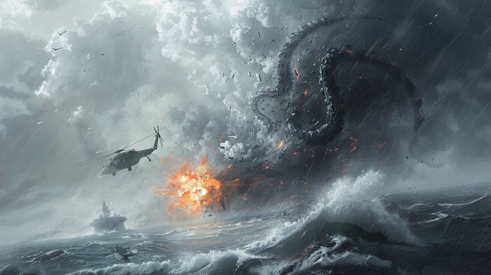
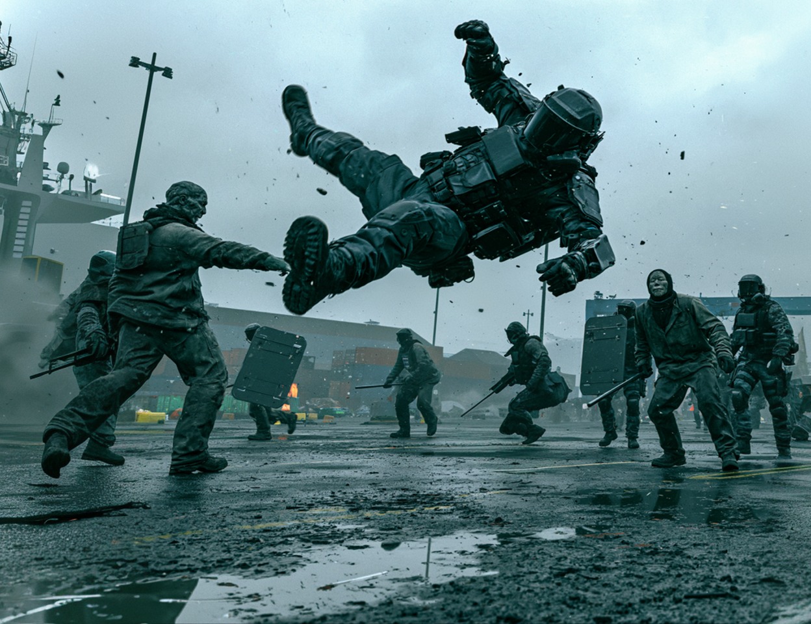
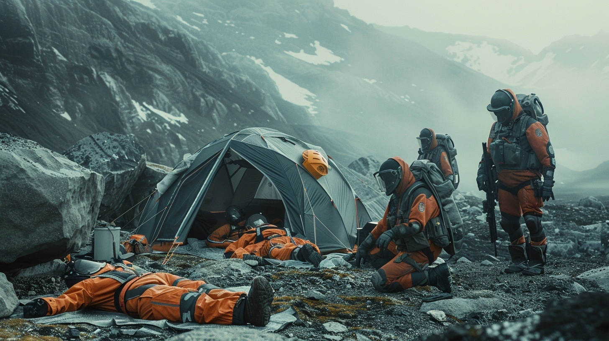

- О проекте
- Пролог. Мир Атлас-Прайм
- Глава 1. Операция «Молчаливый Полдень»
- Глава 2. Красный Прилив
- Глава 3. Гул Пустоты
- Авторство и права
О проекте
Автор: SpaceRus
Вселенная: Атлас-Прайм
Проект: Цикл рассказов «A.C.I. — Хроники Сдерживания»
«A.C.I. — Хроники Сдерживания» — это серия отчётов секретного агентства, которое расследует и изолирует феномены на планете Атлас-Прайм. Каждая глава — одна операция. Один феномен. Один отчёт.
Стиль произведений сочетает в себе несколько направлений. Атмосфера взята из мира «Метро 2033» — напряжённая, мрачная, создающая ощущение, что всё описанное могло произойти на самом деле. Подача брифингов напоминает стиль Ace Combat 7 — чёткая, сухая, по делу, без лишних эмоций. Документальная эстетика подчёркивает реалистичность происходящего.
- Одна глава в неделю.
- Объём: 1200–1800 слов.
- Выход: каждый понедельник в 20:00 МСК.
- Публикация: только в Telegram-канале автора.
Старт проекта: 20 июля 2026 года.
Пролог. Мир Атлас-Прайм
Атлас-Прайм — планета, на которой человечество построило свою цивилизацию, но так и не научилось контролировать всё, что скрыто в её глубинах. Диаметр мира составляет девятнадцать тысяч сто километров — в полтора раза больше Земли. Гравитация здесь тяжелее, каждый шаг требует чуть больше усилий, каждый полёт — чуть больше топлива. Восемь миллиардов двести миллионов человек населяют четырнадцать республик, объединённых в Федерацию Атласских Государств. Единое правительство располагается в Порт-Атласе — городе-порте, ставшем политическим и экономическим центром планеты.
Технологический уровень Атласа-Прайм — это мир, где ядерная энергетика стала обыденностью, компактные термоядерные реакторы питают города и корабли, авиация достигла предела своих возможностей, а космическая программа вышла на орбиту и закрепилась там. Высокоманевренные истребители с искусственным интеллектом патрулируют небо, дроны-камикадзе наносят точечные удары, орбитальные платформы следят за поверхностью. Но за этим фасадом прогресса скрывается то, что не вписывается в учебники физики и инженерные расчёты.
Вооружённые силы планеты объединены под командованием Объединённого Командования Атласа. Космическая программа развивается силами Атласской космической инициативы. Постоянно действующая станция «Горизонт-7» находится на орбите, база на спутнике Терра-2 уже работает, и в планах — экспедиция к поясу астероидов. Человечество смотрит вверх, в звёзды, не подозревая, что самые опасные угрозы прячутся не в космосе, а на своей собственной планете.
Именно для работы с этими угрозами было создано агентство A.C.I. — Atlas Control & Isolation. Формально — научно-исследовательская структура при Объединённом Командовании. Фактически — «тёмная рука» Федерации, занимающаяся расследованием, сдерживанием и изоляцией феноменов, не поддающихся объяснению с позиций современной науки. Агентство появилось после катастрофы в секторе «Молчаливый Полдень». Что именно произошло — засекречено. Известно лишь одно: после тех событий было принято решение, что некоторые тайны не должны становиться достоянием общественности.
Принцип A.C.I. прост и жесток: «Лучше потерять миссию, чем потерять контроль». Агенты работают в тени. Их отчёты никогда не попадают в открытый доступ. Их потери никогда не озвучиваются официально. Они существуют ровно до тех пор, пока нужны. И исчезают, когда становится слишком поздно.
- Пассивный — феномен не проявляет активности без внешнего воздействия. Поведение стабильно. Может находиться под наблюдением без немедленного вмешательства.
- Активный — феномен проявляет целенаправленную активность. Требует постоянного мониторинга и оперативного реагирования.
- Критический — феномен представляет непосредственную угрозу для жизни и инфраструктуры. Требует немедленной изоляции или нейтрализации.
- Биологический — воздействие на живые организмы, модификация тканей или поведения.
- Механический — физическое воздействие на материю, разрушение конструкций.
- Энергетический — воздействие на электромагнитные поля, сигналы, энергию.
- Псионический — воздействие на сознание, восприятие, поведение.
Этот цикл — хроники работы агентства A.C.I. Каждая глава — отчёт об одной операции. Один феномен. Одна команда. Один результат, который никогда не будет обнародован. Только здесь, в этих записях, сохраняется правда о том, что скрыто под поверхностью Атласа-Прайм.
Глава 1. Операция «Молчаливый Полдень»
Объект: A‑006 «Карен»
Классификация: Активный
Вектор воздействия: Механический / Энергетический (предварительно)
Дата операции: 27 марта 2026 года
Время начала миссии: 12:47 UCT
Оперативный сектор: Океан Атласа-Прайм, координаты 31.2° южной широты, 89.4° западной
долготы.
Этап 1. Сводка данных
«Говорит командир Рейнольдс. Операция "Молчаливый Полдень" официально начата.
Объект A‑006, неофициально именуемый "Карен", представляет собой биологическую или механобиологическую структуру кальмароподобной морфологии. Размах щупалец, согласно радарному сканированию, варьируется от сорока пяти до шестидесяти метров. Зона активности — фиксированная точка с координатами 31.2° южной широты, 89.4° западной долготы, глубина погружения от восьмидесяти до ста двадцати метров. Поведение объекта циклично: периоды акустической эмиссии сменяются полной тишиной.
Первичные показания датчиков:
- Акустические импульсы фиксируются на частоте 17.5 герц с повторением каждые 46.7 секунды в активной фазе.
- Магнитное поле искажается на 0.3 процента от нормального значения на дистанции пятьсот метров.
- Гидролокация бесполезна — объект демонстрирует нулевую эхо-сигнатуру на активных сонарах. Наблюдение возможно только через оптические и тепловизионные системы.
Подтверждённые инциденты за последние семьдесят два часа:
- Двадцать четвёртого марта в 14:23 UCT потерян транспортный контейнеровоз «Атлас Принцесс», водоизмещение пятнадцать тысяч тонн. Последнее сообщение с судна: "Что-то под нами. Оно нас не трогает. Оно... смотрит". После этого — тишина. Обломки не обнаружены.
- Двадцать пятого марта в 22:15 UCT пассажирский авиалайнер «Арктика Эйр 77», следовавший по маршруту Порт-Атлас — Нордхейвен, отклонился от курса на сорок семь градусов. Радиосвязь на частоте 124.7 мегагерц была полностью заглушена на четырнадцать минут. После восстановления связи экипаж доложил о непроизвольном снижении на двести метров и временной потере управления. Самолёт совершил аварийную посадку в Нордхейвене. Жертв нет.
- Двадцать седьмого марта в 06:52 UCT возвращаемый аппарат «Лемминг-9», спускаемая капсула с орбитальной станции «Горизонт-7», вошёл в атмосферу. Траектория снижения была скорректирована автоматикой для прохода через зону с координатами 31.2° южной широты, 89.4° западной долготы. На высоте четырёх тысяч двухсот метров зафиксировано резкое аномальное ускорение по вертикальной оси вниз на 2.7 земных g. Парашютная система раскрылась штатно, но в пятистах метрах над водой тросы парашюта были перебиты. Капсула упала в воду со скоростью восемнадцать метров в секунду. Спасательная операция исключена по протоколу 7‑A.
Актуальные угрозы:
- Территориальность. Объект активно защищает зону 31.2° южной широты, 89.4° западной долготы. Любое вторжение рассматривается как атака.
- Структурное воздействие. На дистанции менее двухсот метров объект способен наносить критические повреждения корпусам судов и летательных аппаратов.
- Электромагнитное воздействие. Объект создаёт поле, глушащее и искажающее радиосигналы в радиусе до полутора километров. Навигационные системы дают сбои.
- Гидродинамический удар. При быстром всплытии объект генерирует ударную волну, эквивалентную подводному взрыву мощностью до пятидесяти килограммов тротила.
- Тактическая маскировка. Активный сонар не видит объект. Возможно только пассивное наблюдение.
«Локализовать. Сдержать. Изолировать. Приоритет — изучение без излишнего риска для группы. Если объект проявляет агрессию за пределами зоны — нейтрализация. Если в пределах зоны — отступление и наблюдение. Наша задача — доказать, что это можно контролировать».
Этап 2. Ход миссии
В тринадцать ноль-ноль UCT авианосец NAV‑1 «Посейдон» занимает позицию в двенадцати километрах к северо-востоку от координат объекта. С палубы поднимаются два тяжёлых гидросамолёта AVL‑2 «Альбатрос» и один ударно-разведывательный вертолёт VRT‑1 «Буревестник». Вода под кораблём неестественно спокойна. Полный штиль. Это не нормально для этих широт. Океан словно затаил дыхание.
Экипаж «Посейдона» работает в режиме полного радиомолчания. Коммуникация осуществляется только через оптоволоконные кабели внутри корабля и зашифрованный лазерный канал на вертолёты. Все знают, что Карен слушает.
С первого контакта становится ясно, что объект не просто существует в этой точке, а ждёт. Пилот AVL‑2 капитан Элена Восс докладывает о визуальном контакте. С высоты шестисот метров она видит тень на дне. Тень больше, чем в прошлых отчётах. Приблизительно пятьдесят пять метров в размахе. Существо лежит на дне. Спокойно. Словно ждёт.
В тринадцать двадцать семь UCT вертолёт «Буревестник» зависает на высоте пятьдесят метров над точкой. Гидроакустический буй сброшен. В первые секунды — полная тишина. Затем — низкочастотный гул, от которого у операторов начинает ныть затылок. Частота 17.5 герц. Звук проходит сквозь сталь, проникает в кости, в мозг. Вертолётчик докладывает о вибрациях в конструкции винта. Командир приказывает подняться до восьмидесяти метров. Гул не затихает.
Сбрасывается подводный дрон. Он опускается на глубину шестьдесят метров. Оптика передаёт картину, от которой холод пробегает по коже. Существо имеет не кальмароподобную, а скорее паукообразную форму с длинными гибкими щупальцами. Центральное тело — около восьми метров в диаметре. Оно не биологическое. Оно металлическое. Чёрное. На поверхности — странные углубления, напоминающие геометрические узоры. Это не природа. Это кто-то построил.
Дрон приближается на пятнадцать метров. Щупальца начинают медленно шевелиться. Командир приказывает остановиться. Следующая минута становится самой долгой в операции. Объект поднимает одно щупальце. Оно касается корпуса дрона. Не грубо, не агрессивно. Изучающе. Затем — резкий рывок. Дрон раздавлен. Давление достигает сорока пяти мегапаскалей за ноль целых три десятых секунды. Это невозможно для гидравлического удара. Это целенаправленное механическое воздействие.
В тринадцать сорок пять UCT гидросамолёт AVL‑2 докладывает о странном поведении высотомера. Показания скачут в диапазоне от пятисот до девятисот метров. Система GPS даёт сбой — координаты смещаются на двести метров к югу. Объект глушит навигацию. Командир приказывает AVL‑2 выйти из зоны. Слишком поздно.
На экранах радара возникает быстрое движение. Что-то поднимается со дна. Скорость — тридцать два метра в секунду. Щупальце вырывается из воды, достигает высоты сто двадцать метров и обвивает левое крыло гидросамолёта. Последнее сообщение капитана Восс обрывается на полуслове. AVL‑2 входит в штопор. Крыло отрывается у самого основания. Гидросамолёт падает на воду с высоты семьдесят метров. Взрыв. Огненный шар на триста метров. Пятно горящего керосина на воде. Обломки медленно погружаются. Вертолёт зависает в трёхстах метрах. Выживших нет. Капитан Восс и её второй пилот погибли.

В четырнадцать десять UCT объект уходит на глубину. Командир принимает тяжёлое решение. Авианосец с восемьюстами членами экипажа — не та цена, которую можно заплатить. Приказан полный отход на двадцать километров. Наблюдение продолжится дистанционно. Но судьба Атласа-Прайм имеет свои планы.
Оператор связи докладывает о нештатной ситуации. Спускаемая капсула «Лемминг-9» сбилась с курса и входит в атмосферу прямо над зоной объекта. В четырнадцать двадцать две UCT в небе появляется яркая точка. Траектория полёта проходит ровно над координатами. На высоте четырёх тысяч двухсот метров — вспышка. Телеметрия показывает аномальное ускорение. Капсула меняет траекторию на пятнадцать градусов.
Парашюты раскрыты, но кто-то обрывает их тросы. Чёрная фигура поднимается из воды. Одно щупальце, другое, третье. Они перехватывают капсулу в пятистах метрах от воды. Тросы парашюта лопаются. Капсула падает в воду. Удар. Брызги. Тишина.
Капсула не тонет. Она лежит на поверхности. Объект держит её. Медленно, с пугающей аккуратностью, существо поднимает капсулу над водой. Секунда. Другая. Оно изучает её. Затем резкое движение — и капсула разорвана на части, словно консервная банка. Тела астронавтов — три человека — всплывают. Объект уходит в глубину, забрав с собой обломки.
Этап 3. Изучение и выводы учёных
Полученные данные:
- Анализ акустических импульсов A‑006 выявил вторичную частоту — 23.8 герц, которая появлялась за восемь целых две десятых секунды до каждого акта агрессии. Это может быть предупреждением или активацией защитного механизма.
- Металлическая структура тела предположительно состоит из титано-никелевого сплава с вкраплениями неизвестного материала, отражающего рентгеновское излучение почти на сто процентов. Технологии, использованные при создании объекта, превосходят современные разработки Атласа-Прайм.
- Поведение объекта не сводится к простой агрессии. Он изучает. Он захватил дрон, захватил капсулу, но не уничтожил авианосец. Возможно, он не считал крупный корабль угрозой. Или считал, но проявил интерес к более мелким объектам. Это ставит под вопрос природу его интеллекта.
Гипотеза о природе феномена:
A‑006 не является биологическим объектом. Это автоматизированная защитная система или сторожевой механизм, предназначенный для охраны точки с координатами 31.2° южной широты, 89.4° западной долготы. Вероятно, эта точка скрывает вход в неизвестную подводную структуру. Поведение объекта варьируется от пассивного наблюдения до активного уничтожения в зависимости от размера и, возможно, намерений вторгающегося объекта.
Капсула «Лемминг-9» была уничтожена с особой жестокостью. Это может быть связано с тем, что она приближалась к зоне с высокой скоростью — до двухсот пятидесяти метров в секунду на высоте пятьсот метров. Объект мог истолковать это как угрозу.
Практические выводы для будущих миссий:
- Коррекция протоколов подлёта. Запрещается приближение тяжёлых аппаратов весом свыше пяти тонн на дистанцию менее двух километров. Операции должны проводиться исключительно с использованием малых беспилотных аппаратов массой до пятисот килограммов. Потеря AVL‑2 произошла из-за недооценки дальности поражения. Объект способен наносить вертикальный удар на высоту до ста двадцати метров. Это необходимо учитывать при планировании низковысотных полётов.
- Акустическая маскировка. Частота 17.5 герц является вероятным раздражителем. Рекомендуется изменить частотный диапазон активных сонаров, использовать инфразвуковые глушители или имитировать естественную акустическую среду океана.
- Потери миссии. AVL‑2 «Феникс» с двумя пилотами, глубинный зонд, спускаемая капсула «Лемминг-9» с тремя астронавтами. Объект продемонстрировал возможность избирательного воздействия. Это не хаотическая стихия. Это враг, который думает.
Финал главы
Статус миссии: частично успешный.
- Цель локализовать и изолировать объект достигнута: зона, характер и поведение определены.
- Цель изучить объект без риска провалена: техника и люди потеряны из-за недооценки возможностей.
- Объект остаётся в рамках своей зоны активного воздействия.
Потери:
- Один тяжёлый гидросамолёт AVL‑2 «Феникс» — уничтожен.
- Один дистанционно-управляемый подводный аппарат — потерян.
- Одна спускаемая капсула «Лемминг-9» — уничтожена.
- Пять человек погибших: два пилота AVL‑2 и три астронавта.
- Два человека ранены: экипаж вертолёта VRT‑1 «Буревестник» получил травмы позвоночника при резком манёвре уклонения.
Инфосводка свойств феномена A‑006 «Карен»:
- Происхождение: неизвестно, предположительно внеземное.
- Структура: металлическая, титано-никелевый сплав с включениями неизвестного материала.
- Форма: кальмарообразная, с элементами паукообразной морфологии.
- Размах щупалец: 45–60 метров (зафиксировано увеличение на 10 метров по сравнению с первыми наблюдениями).
- Поведение: агрессивно-территориальное с элементами интеллектуального анализа.
- Спектр воздействия: механическое разрушение, глушение сигналов, гидродинамические удары.
- Зона контроля: радиус 1.5 км от точки 31.2°S, 89.4°W (активная зона), до 2.5 км (зона сенсорного обнаружения).
Уровень опасности: Активный.
Обоснование: объект не демонстрирует постоянной агрессии вне своей зоны, но внутри неё поведение непредсказуемо. Он может долго оставаться пассивным, затем атаковать без видимого провоцирования. Сложность прогнозирования его действий и наличие явного интеллекта не позволяют отнести его к категории Пассивный. В то же время недостаток активных попыток распространиться за пределы зоны не даёт оснований для классификации Критический.
Условия изоляции:
- Установлен постоянный периметр контроля на расстоянии пять километров от точки. Дежурство несут два корабля NAV, сменяющиеся каждые сорок восемь часов, и три беспилотных летательных аппарата с сенсорными системами.
- Любое судно или аппарат, приближающееся к зоне 31.2° южной широты, 89.4° западной долготы без кода доступа, подлежит принудительному отводу тактическими буксирами или предупредительными акустическими сигналами.
- При активации объекта — немедленный отход всех кораблей на дистанцию десять километров. Контакт разрешён только с использованием беспилотников. Захват или извлечение объекта запрещены без прямого приказа Дирекции.
- Ежедневный акустический мониторинг обязателен. При изменении базовой частоты с 17.5 герц — повышенная готовность для всего флота в радиусе ста километров.
В ходе анализа обломков AVL‑2 «Феникс», поднятых с глубины сорок пять метров, на поверхности одного из фрагментов стальной обшивки обнаружены гравировки, не характерные для заводского производства. Они имеют вид последовательности символов: «17/89.4/31.2». Символы расположены нелинейно, образуя подобие круга, разделённого на восемь сегментов. Центр круга пуст, но на внутренней поверхности одного из сегментов выцарапана цифра «4».
Попытки идентифицировать символы по базам данных A.C.I. не дали результата. Специалисты полагают, что это может быть координатным якорем или средством коммуникации, оставленным объектом. Точное значение последовательности не расшифровано. Рекомендовано направить аналитическую группу к цифре «4» в контексте подводных геологических аномалий в квадрате 31.2° южной широты, 89.4° западной долготы.
Глава 2. Красный Прилив
Феномен: A‑007 «Красный Прилив»
Классификация: Активный
Вектор воздействия: Биологический / Псионический (предварительно)
Дата операции: 04/04/2026
Время начала миссии: 08:15 UCT
Оперативный сектор: Порт-Фрейзер, восточное побережье, координаты 12.4°S, 145.7°W.
Этап 1. Сводка данных
«Говорит командир Стоун. Операция "Красный Прилив" официально начата.
В 04:47 UCT поступило сообщение от береговой охраны Порт-Фрейзера. Группа из двенадцати человек, одетых в рабочую одежду, была замечена движущейся вдоль пирса в направлении военного склада "Форпост-7". Охрана склада запросила идентификацию. Группа не ответила. При попытке остановить их — охрана была атакована с применением физической силы, несоразмерной для гражданских лиц. Двое охранников госпитализированы с переломами и рваными ранами.
Нарушители не используют оружие. Действуют скоординированно, молча. Судя по записям камер, они не реагируют на окрики, предупреждения и, предположительно, на боль.
Первичные показания с места:
- Температура тела нарушителей — 39.2°C, нехарактерно высокая для условий прибрежного города в 7:00 утра.
- Зрачковый рефлекс отсутствует. Глаза открыты, но реакции на свет нет.
- Частота шагов синхронизирована — 126 ударов в минуту, независимо от внешних факторов.
Предварительный анализ: воздействие неизвестного агента, предположительно биологического или химического происхождения. Связь с предыдущими отчётами не установлена.
Актуальные угрозы:
- Биологическая угроза. Неизвестный агент может быть заразным. Контакт с нарушителями — только в средствах биозащиты.
- Координация. Действия группы указывают на наличие внешнего управления. Источник сигнала не установлен.
- Целенаправленность. Маршрут группы пролегает прямо к складу боеприпасов "Форпост-7".
- Отсутствие переговоров. Нарушители не вступают в диалог и не реагируют на угрозы.
«Перехватить группу. Изолировать. Обеспечить сохранность биоматериала для анализа. Минимизировать контакт с гражданскими. При отсутствии возможности изоляции — нейтрализовать с сохранением тканей для исследования».
Этап 2. Ход миссии
08:30 UCT. Группа GRD‑3 выдвигается на двух бронетранспортёрах к координатам 12.4°S, 145.7°W. Прибытие через 12 минут.
08:42 UCT. Визуальный контакт. Двенадцать человек, одетых в рабочую одежду, движутся колонной по два человека. Темп — ровный, без остановок. Один из нарушителей несёт металлический прут, остальные — без оружия.
Командир Стоун приказывает блокировать дорогу. Первый бронетранспортёр выезжает перед колонной. Второй заходит с тыла.
08:44 UCT. Перехват переговоров:
Нарушители не останавливаются. Они продолжают движение, не меняя скорости, как будто бронетранспортёра не существует.
08:45 UCT. Приказ открыть предупредительный огонь в воздух. Два выстрела. Нарушители не реагируют.
Первый ряд колонны достигает бронетранспортёра. Нарушитель, идущий первым, ударяет металлическим прутом по корпусу машины с такой силой, что прут гнётся. Он продолжает бить, не останавливаясь, пока кисть не ломается. Он не издаёт ни звука и продолжает наносить удары сломанной рукой.
08:47 UCT. Командир Стоун отдаёт приказ на силовое задержание. Группа выдвигается с щитами и дубинками.
В момент контакта выясняется, что физическая сила нарушителей значительно превосходит нормальные показатели. Первый боец GRD‑3, попытавшийся скрутить нарушителя, отброшен ударом на 4 метра. Фиксируется перелом ключицы и трёх рёбер.

Нарушители начинают действовать более агрессивно. Они не защищаются — они наступают. Они игнорируют удары дубинками по корпусу. Они не реагируют на применение газовых баллончиков.
08:52 UCT. Группа применяет табельное оружие. Выстрелы в ноги и плечи. Нарушители падают, но продолжают ползти вперёд, не издавая ни звука. Они не пытаются укрыться, не пытаются бежать. Они просто двигаются к цели.
Последний из двенадцати — женщина в рабочем комбинезоне — достигнув бронетранспортёра, начинает биться головой о броню, разбивая лицо до неузнаваемости. Она не останавливается до тех пор, пока не теряет сознание.
09:05 UCT. Все двенадцать нарушителей обездвижены. Десять живы и доставлены в изолятор полевого госпиталя. Двое скончались от потери крови до прибытия медиков.
Предварительный медицинский осмотр выявил:
- Аномальное сращивание костной ткани — переломы срастаются в 3–4 раза быстрее нормы.
- Кровь имеет неестественный тёмно-красный оттенок, напоминающий цвет морской воды.
- В крови обнаружены микрочастицы металла, не соответствующего известным сплавам Атласа-Прайм.
Запись перехвата с полевого госпиталя, 09:15 UCT:
Этап 3. Изучение и выводы учёных
Полученные данные:
- Анализ крови выявил наличие микроскопических частиц, идентичных по структуре металлу, найденному в образцах с Феномена A‑006 («Карен»). Вероятность случайного совпадения — менее 0.01%.
- В мозговой ткани зафиксирована активность в зоне, отвечающей за координацию движений, не характерная для здорового человека. Сигнал напоминает внешнее электронное управление.
- Частота сердцебиения у всех десяти нарушителей синхронизирована с точностью до 0.1 удара в минуту. Это невозможно для естественных биоритмов.
Гипотеза:
Феномен A‑007 — результат биологической модификации людей с использованием технологии, не известной современной науке Атласа-Прайм. Частицы металла в крови указывают на наличие имплантированных устройств, которые управляют поведением носителей. Цель — создание управляемых биологических единиц для выполнения конкретных задач.
Связь с Феноменом A‑006 — подтверждена на уровне материала и частотных характеристик. Это указывает на единый источник всех зафиксированных феноменов.
Практические выводы для будущих миссий:
- Протокол контакта. Все подозрительные лица с признаками "Красного Прилива" должны изолироваться без физического контакта. Использовать дистанционные захваты и парализующие средства.
- Биозащита. Обязательное использование герметичных костюмов. Неизвестный агент может передаваться через биологические жидкости.
- Исследование материала. Извлечённые микрочастицы направлены в лабораторию высокого приоритета для расшифровки. Предположительно, это часть системы дистанционного управления.
Финал главы
Статус миссии: частично успешный.
- Группа нарушителей перехвачена и изолирована.
- Собраны биоматериалы для анализа.
- Потери личного состава — 3 человека ранено, 1 тяжело.
- Выявлена технологическая связь с Феноменом A‑006.
Инфосводка свойств Феномена A‑007 «Красный Прилив»:
- Вектор: Биологический / Псионический.
- Способ воздействия: Имплантированные микрочастицы, управляющие поведением носителя.
- Уровень угрозы: Активный.
- Физические характеристики: Повышенная болевая устойчивость, ускоренная регенерация, синхронизированные действия.
- Связь с другими феноменами: Подтверждена через состав металла и частотные характеристики.
Условия изоляции:
- Нарушители содержатся в индивидуальных боксах с дистанционным мониторингом.
- Доступ к ним разрешён только персоналу в биозащитных костюмах.
- Образцы направлены в спецлабораторию для анализа микрочастиц.
- Периметр города усилен патрулями. В случае повторного появления — немедленная изоляция.
При анализе металлических микрочастиц, извлечённых из крови нарушителей, спектральный анализ показал наличие повторяющейся структуры, не являющейся случайной. При увеличении в 50 000 раз структура образует последовательность элементов, напоминающих координатную сетку. Первые три точки соответствуют известным координатам: 31.2°S, 89.4°W (Феномен A‑006) и 12.4°S, 145.7°W (текущая операция).
Четвёртая точка структуры не соответствует известным координатам и не нанесена на карты A.C.I. Она указывает на регион 9°S, 112°W — область, не имеющую стратегического или научного значения. Однако анализ показывает, что это не географическая координата в привычном понимании. Это может быть указанием на глубину, высоту или нечто иное.
При попытке сопоставить структуру с известными картами звёздного неба, обнаружено совпадение с одной из систем в туманности NGC 6820. Астрономы A.C.I. не дают объяснения, но отметили, что данная область не имеет отношения к Атласу-Прайм. Предположительно, это может быть системой координат, используемой для навигации или связи, отличной от принятой на планете.
Глава 3. Гул Пустоты
Феномен: A‑008 «Гул Пустоты»
Классификация: Активный (предварительно)
Вектор воздействия: Энергетический / Псионический (предварительно)
Дата операции: 11/04/2026
Время начала миссии: 06:30 UCT
Оперативный сектор: Хребет Теней, координаты 44.8°S, 72.3°W, высота 2980 м.
Этап 1. Сводка данных
«Говорит командир Кортес. Операция "Гул Пустоты" официально начата.
Девятого апреля в 14:30 UCT поступило сообщение о пропаже геологической экспедиции Института геологии Атласа в районе Хребта Теней. Группа из шести человек не вышла на связь в установленное время. Десятого апреля спасательная группа достигла лагеря. Все шесть членов экспедиции обнаружены мёртвыми.
Первичный осмотр тел показал отсутствие внешних повреждений, характерных для падения или нападения хищников. Смерть наступила в результате внутреннего повреждения органов — разрывы сосудов, кровоизлияния в мозг, дегидрация тканей. Характер повреждений не соответствует известным природным патологиям.

Спасатели зафиксировали аномальный звук в районе лагеря — низкочастотный гул, который не прекращался в течение всего времени пребывания. Частота, по их показаниям, — приблизительно 17 герц. Один из спасателей жаловался на головную боль и "чувство присутствия".
Оборудование в лагере работало нестабильно — GPS показывал отклонения до 400 метров, радиосвязь прерывалась.
Актуальные угрозы:
- Энергетическое воздействие. Источник сигнала нарушает работу электроники в радиусе не менее 500 метров.
- Биологическое воздействие. Имеются свидетельства влияния на организм человека — головные боли, дезориентация, летальные исходы при длительном контакте.
- Неизвестный источник. Источник сигнала не идентифицирован. Работает автономно, без внешнего питания.
«Провести изоляцию зоны. Установить источник сигнала. Извлечь для анализа. При невозможности извлечения — маркировать и установить дистанционный мониторинг».
Этап 2. Ход миссии
07:15 UCT. Группа VRT‑4 высаживается на высоте 2980 метров. На месте — спасатели, тела геологов, оборудование лагеря. Гул слышен сразу — низкая, вибрирующая нота, которая ощущается не столько ушами, сколько телом.
Запись перехвата:
«Да. У всех. Не обращать внимания. Развернуть сканеры».
07:30 UCT. Сканеры фиксируют источник сигнала. Он исходит из скального массива в 50 метрах от лагеря. Визуально — невидим. Звук, судя по показаниям, идёт изнутри горы.
08:10 UCT. Группа бурит скважину в скале. На глубине 1.2 метра инструмент упирается в полость. Специалисты расширяют проход и обнаруживают устройство — металлический диск, примерно 60 см в диаметре, встроенный в скалу.
Запись перехвата:
«Внешние повреждения?»
«Нет. Оно… целое. И оно работает».
08:45 UCT. При попытке извлечения устройства происходит резкий импульс. Все приборы в радиусе 500 метров отключаются на 4 секунды. Два оперативника из группы извлечения падают на колени — кровь из носа, дезориентация. Через 10 минут состояние стабилизируется, но оба отправлены вниз для обследования.
Гул не прекратился, но изменил тональность. Стал глубже. Тяжелее.
09:20 UCT. Дистанционный манипулятор извлекает устройство из скалы. Оно не имеет внешних разъёмов, кнопок или индикаторов. Поверхность — гладкая, тёмно-серая, с едва заметным рисунком, похожим на тот, что был обнаружен на объекте A-006.
Группа фиксирует гравировки на корпусе устройства: последовательность символов, аналогичная обломкам с A-006, с одной новой цифрой — «7» вместо «4».
Этап 3. Изучение и выводы учёных
Полученные данные:
- Устройство не имеет внешнего питания, но сохраняет активность. Предположительно, использует неизвестный тип энергетического элемента, способный работать десятилетиями.
- Частота излучения — 17.5 Гц. Идентична частоте, зафиксированной в Главе 1 (объект A-006) и в Главе 2 (металлические частицы в крови).
- Материал корпуса — титано-никелевый сплав с добавлением неизвестного элемента, отражающего рентгеновское излучение. Идентичен материалу обшивки A-006 и микрочастиц из крови «Красного Прилива».
- Устройство является ретранслятором или передатчиком. Оно не генерирует сигнал, а усиливает и передаёт его. Источник сигнала находится за пределами зоны обнаружения.
Гипотеза:
Устройство в Хребте Теней — часть сети, соединяющей океанский объект, модифицированных людей и неизвестный передатчик в горах. Вся сеть работает на единой частоте и, предположительно, управляется из одного центра. Гравировки с цифрами «4» и «7» — вероятно, идентификаторы узлов сети.
Практические выводы для будущих миссий:
- Дистанционное извлечение. При контакте с подобными устройствами использовать исключительно дистанционные манипуляторы. Энергетический импульс может быть опасен для человека.
- Защита электроники. В зонах с частотой 17.5 Гц использовать экранированное оборудование. Вероятность выхода из строя бортовых систем — высокая.
- Медицинский протокол. При контакте с сигналом и появлении симптомов (головная боль, кровотечение, дезориентация) — немедленная эвакуация.
Финал главы
Статус миссии: успешный.
- Устройство извлечено и направлено в лабораторию.
- Зона изолирована, мониторинг установлен.
- Потери личного состава — 2 человека с временными симптомами.
- Подтверждена связь с Феноменами A‑006 и A‑007.
Инфосводка свойств Феномена A‑008 «Гул Пустоты»:
- Вектор: Энергетический / Псионический.
- Способ воздействия: Низкочастотное излучение, нарушение работы электроники и биологических систем.
- Уровень угрозы: Активный.
- Источник: Ретранслятор неизвестного происхождения.
- Связь с другими феноменами: Подтверждена через частоту, материал и гравировки.
Условия изоляции:
- Устройство содержится в экранированном контейнере.
- Доступ к нему разрешён только персоналу в защитных костюмах.
- Периодический мониторинг частоты излучения.
- В случае увеличения мощности сигнала — немедленная изоляция лаборатории.
При анализе гравировок на корпусе устройства установлено, что они образуют последовательность, аналогичную той, что была найдена на обломках A-006, но с новой цифрой. Предыдущая последовательность содержала цифру «4», текущая — цифру «7». Расстояние между символами совпадает. Предположительно, это узлы одной сети.
При сопоставлении с данными из Главы 2 (микрочастицы с координатной структурой) выявлено, что гравировки на устройстве совпадают с одним из сегментов координатной сетки. Точка, соответствующая цифре «7», указывает на регион 52°S, 134°W — пустынный район, не имеющий значимых объектов инфраструктуры. Рекомендовано включить данный район в план дальнейших исследований.
Авторство и права
Автор: SpaceRus
Канал: www.youtube.com/@Space_Rus_240
Проект: Цикл рассказов «A.C.I. — Хроники Сдерживания»
Вселенная: «Атлас-Прайм» (оригинальный сеттинг)
Данный текст является оригинальным произведением, созданным автором под псевдонимом SpaceRus. Все права на текст, персонажей, классификацию феноменов, структуру отчётов, названия подразделений, векторы воздействия, сюжетные линии и сеттинг «Атлас-Прайм» принадлежат автору.
- Копирование и публикация текста без указания авторства.
- Использование текста в коммерческих целях без письменного разрешения автора.
- Изменение текста и выдача его за свой.
- Публикация с обязательной ссылкой на автора SpaceRus.
- Создание аудиоверсий, видеороликов, переводов с обязательным указанием авторства.
- Небольшие цитаты в обзорных и критических материалах.
Контакты для сотрудничества: konstanta240@gmail.com
© SpaceRus, 2026. Все права защищены.
Все тексты © SpaceRus, 2026
Сделано с ♥ для тех, кто смотрит в бездну